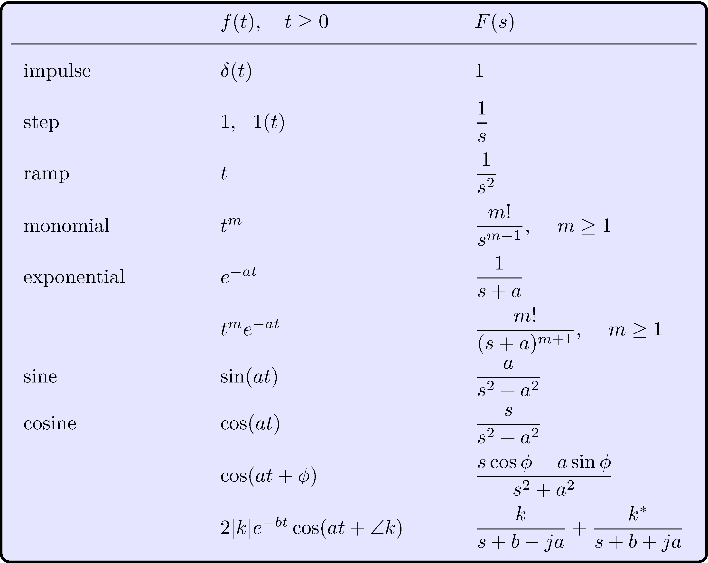
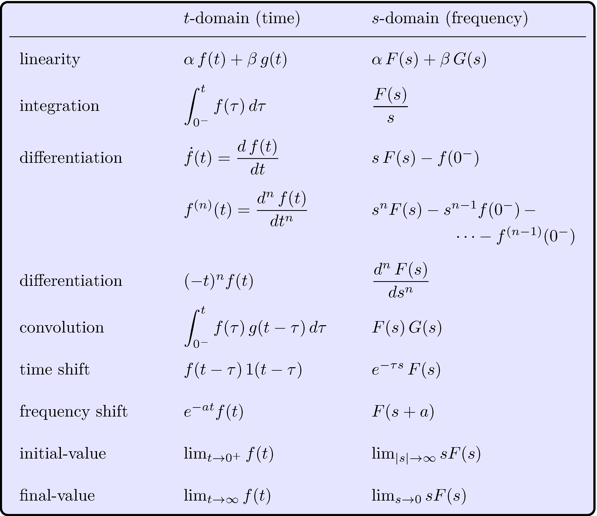
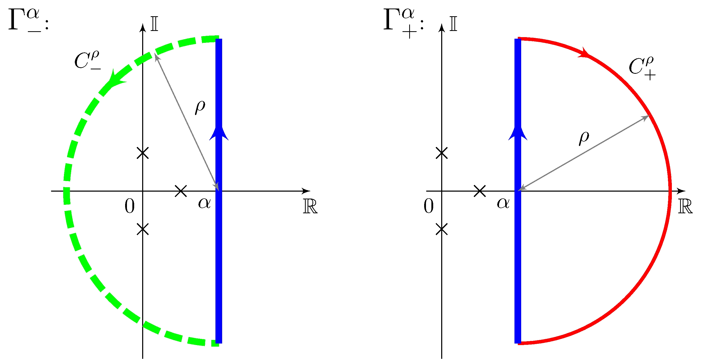

Fundamentals of Linear Control:
A
Concise Approach
Maurício C. de Oliveira
Chapter 3: Transfer-Function Models
linearcontrol.info/fundamentals
3.1 The Laplace Transform
Definition
\[\begin{align*} \label{eq:laplace} F(s) &= \mathcal{L} \{ f(t) \} = \int_{0^-}^{\infty} f(t) \, e^{-s t} \, dt \end{align*}\]
Example
\[\begin{align*} f(t) &= 1 & F(s) &= \int_{0^-}^{\infty} e^{-s t} \, dt = \left . \frac{- e^{-s t}}{s} \right |_{0^-}^\infty = 0 - \frac{-1}{s} = \frac{1}{s}, \qquad \operatorname{Re}(s) > 0 \end{align*}\]
Region of convergence
\[\begin{align*} \operatorname{Re}(s) > \alpha_c = 0 \end{align*}\]
Inverse Laplace Transform
\[\begin{align*} \mathcal{L}^{-1} \{ F(s) \} &= \frac{1}{2 \pi j} \lim_{\omega \rightarrow \infty} \int_{\alpha - j \omega}^{\alpha + j \omega} F(s) \, e^{s t} \, ds, & \alpha > \alpha_c \end{align*}\]
See book for a lot more!
Table of Transform Pairs

Table of Properties

3.2 Linearity, Causality, and Time-Invariance
Dynamic model
\[\begin{align*} y(t) = G(u(t),t) \end{align*}\]
Linearity
\[\begin{align*} y_1(t) &= G(u_1(t),t), & y_2(t) &= G(u_2(t),t), & y(t) &= G(\alpha_1 \, u_1(t) + \alpha_2 \, u_2(t), t) = \alpha_1 \, y_1(t) + \alpha_2 \, y_2(t) \end{align*}\]
Time-invariance
\[\begin{align*} y(t) &= G(u(t),t), & y(t, \tau) &= G(u(t - \tau),t) = y(t - \tau) \end{align*}\]
Impulse response
Sifting property of the impulse
\[\begin{align*} u(t) &= \int_{-\infty}^\infty \! u(\tau) \, \delta(t - \tau) \, d\tau = \int_{0^-}^t \! u(\tau) \, \delta(t - \tau) \, d\tau, & u(t) &= 0, \quad t < 0 \end{align*}\]
Linearity
\[\begin{align*} y(t) &= \int_{0^-}^\infty u(\tau) \, g(t, \tau) \, d\tau = \int_{0^-}^\infty g(t, \tau) \, u(\tau) \, d\tau, & g(t, \tau) &= G(\delta(t - \tau), t) \end{align*}\]
Causality
\[\begin{align*} g(t, \tau) &= 0, \quad t < \tau & & \implies & y(t) &= \int_{0^-}^t g(t, \tau) \, u(\tau) \, d\tau \end{align*}\]
Impulse response
Causality + Time-invariance
\[\begin{align*} g(t, \tau) &= g(t - \tau) = 0, \quad t < \tau & & \implies & y(t) &= \int_{0^-}^t g(t - \tau) \, u(\tau) \, d\tau \end{align*}\]
Laplace transform
\[\begin{align*} Y(s) &= G(s) \, U(s), & U(s) &= \mathcal{L} \{ u(t) \}, & G(s) &= \mathcal{L} \{ g(t) \}, & Y(s) &= \mathcal{L} \{ y(t) \} \end{align*}\]
\(G\) is the transfer-function
3.3 Differential Equations and Transfer-Functions
Car model
\[\begin{align*} \dot{y}(t) + \frac{b}{m} \, y(t) - \frac{p}{m} u(t) &= 0 \end{align*}\]
Laplace transform
\[\begin{align*} \mathcal{L} \left \{ \dot{y}(t) + \frac{b}{m} \, y(t) - \frac{p}{m} u(t) \right \} &= s Y(s) - y(0^-) + \frac{b}{m} Y(s) - \frac{p}{m} U(s) = 0 \end{align*}\]
Transfer-function
\[\begin{align*} Y(s) &= G(s) \, U(s) + F(s) \, y(0^-), & G(s) &= \frac{\frac{p}{m}}{s + \frac{b}{m}}, & F(s) &= \frac{1}{s + \frac{b}{m}} \end{align*}\]
Impulse response
\[\begin{align*} g(t) &= \mathcal{L}^{-1} \left \{ \frac{\frac{p}{m}}{s + \frac{b}{m}} \right \} = \frac{p}{m} e^{-(\frac{b}{m})t}, \quad t \geq 0 \end{align*}\]
3.4 Integration and Residues
Theorem 3.1. Cauchy’s residue theorem
If \(f\) is analytic inside and on the the positively oriented simple closed countour \(C\) except at singular points \(p_k\), \(k = 1, \ldots, n\), inside \(C\) then \[\begin{align*} \int_{C} f(s) \, ds &= 2 \pi j \sum_{k = 1}^{n} \operatorname{Res}_{s = p_k} f(s) \end{align*}\]
Notes
- \(\operatorname{Res}_{s = p_k} f(s)\) is the residue of \(f\) at \(s = p_k\)
- \(\operatorname{Res}_{s = p_k} f(s)\) is simpler to calculate than the original integral
- \(C\) is positively oriented simple contour
- Multiply by ‘\(-1\)’ if negatively oriented
- singularities are isolated, inside and not on the contour
- singularities outside \(C\) do not matter
Example
Contours

Function
\(\displaystyle f(s) = \frac{s - 1}{s (s + 1)}\)
Integrals
\[\begin{align*} \frac{1}{2 \pi j} \int_{C_1} f(s) \, ds &= \operatorname{Res}_{s = 0} f(s) + \operatorname{Res}_{s = -1} f(s) \\ \int_{C_2} f(s) \, ds &= - \int_{C_1} f(s) \, ds \\ \int_{C_3} f(s) \, ds &= 0 \end{align*}\]
Application: Inverse Laplace transform

\[\begin{align*} t &> 0: & \lim_{\rho \rightarrow \infty} \int_{C^\rho_-} F(s) \, e^{s t} \, ds &= 0 & & \implies & \mathcal{L}^{-1}\{F(s)\} &= \frac{1}{2 \pi j} \lim_{\rho \rightarrow \infty} \int_{\Gamma_-^\alpha} F(s) \, e^{s t} \, ds \\ & & & & & & &= \sum_{k = 1}^{n} \operatorname{Res}_{s = p_k} \left (F(s) \, e^{s t} \right ) \\ t &< 0: & \lim_{\rho \rightarrow \infty} \int_{C^\rho_+} F(s) \, e^{s t} \, ds &= 0 & & \implies & \mathcal{L}^{-1}\{F(s)\} &= \frac{1}{2 \pi j} \lim_{\rho \rightarrow \infty} \int_{\Gamma_+^\alpha} F(s) \, e^{s t} \, ds = 0 \end{align*}\]
Residue
\[\begin{align*} \operatorname{Res}_{s = s_0} f(s) &= \int_{C \in D} f(s) \, ds, & D &= \{ s : 0 < |s - s_0| < R \} \end{align*}\]
Laurent series expansion
\[\begin{align*} f(s) &= \frac{ g(s)}{(s - s_0)^m}, \quad g(s_0) \neq 0, \quad g \text{ is analytic at } s_0 \end{align*}\]
Calculus of residues
\[\begin{align*} \operatorname{Res}_{s = s_0} f(s) &= \begin{cases} g(s_0), & m = 1 \\[1ex] \displaystyle \frac{g^{(m -1)}(s_0)}{(m-1)!} , & m \geq 2 \end{cases} \end{align*}\]
3.5 Rational Functions
Canonical form
\[\begin{align*} F(s) &= \frac{N(s)}{D(s)}, & & N, D \text{ are polynomials} \end{align*}\]
Notes
- Zeros: \(N(s) = \beta \, (s - z_1) \cdots (s - z_m) = 0\)
- Poles: \(D(s) = (s - p_1) \cdots (s - p_n) = 0\), \(D\) is monic
- Order: \(n\)
- Proper: \(m \leq n\)
- Strictly Proper: \(m < n\)
Inverse Laplace transform
\[\begin{align*} & F \text{ is strictly proper} & & \implies & \mathcal{L}^{-1}\{F(s)\} &= \sum_{k = 1}^{n} \operatorname{Res}_{s = p_k} \left (F(s) \, e^{s t} \right ), \quad t \geq 0 \end{align*}\]
Simple poles
\[\begin{align*} F(s) \, e^{s t} &= \frac{ G(s)}{(s - p_k)}, & G(s) &= (s - p_k) \, F(s) \, e^{s t}, & G(p_k) &\neq 0 \end{align*}\]
Residues
\[\begin{align} \operatorname{Res}_{s=p_k} \left ( F(s) \, e^{s t} \right ) &= G(p_k) = k_k \, e^{p_k t}, & k_k &= \lim_{s \rightarrow p_k} (s - p_k) F(s) \end{align}\]
Inverse Laplace transform
\[\begin{align*} \mathcal{L}^{-1}\{F(s)\} &= \sum_{k = 1}^{n} k_k e^{p_k t}, \quad t \geq 0 \end{align*}\]
Expansion in partial fractions
\[\begin{align*} F(s) &= \mathcal{L} \left \{ \sum_{k = 1}^{n} k_k e^{p_k t} \right \} = \sum_{k = 1}^{n} k_k \mathcal{L} \left \{ e^{p_k t} \right \} = \sum_{k = 1}^{n} \frac{k_k}{s - p_k} \end{align*}\]
Example: car model step response
Step input
\[\begin{align*} u(t) &= \tilde{u} \, 1(t), & U(s) &= \frac{\tilde{u}}{s} \end{align*}\]
Laplace transform of the output
\[\begin{align*} Y(s) &= \frac{\tilde{u}}{s} \times \frac{\frac{p}{m}}{s + \frac{b}{m}} + \frac{1}{s + \frac{b}{m}} \, y_0 \end{align*}\]
Inverse Laplace transform
\[\begin{align*} k_1 &= \lim_{s \rightarrow 0} s \, Y(s) = \frac{p}{b} \tilde{u}, & k_2 &= \!\!\!\lim_{s \rightarrow -\frac{b}{m}} \left ( s + \frac{b}{m} \right ) Y(s) = y_0 - \frac{p}{b} \tilde{u} \end{align*}\] \[\begin{align*} y(t) &= \sum_{k = 1}^2 \operatorname{Res}_{s = p_k} \left (Y(s) e^{s t} \right ) = k_1 e^{p_1 t} + k_2 e^{p_2 t} = \frac{p}{b} \tilde{u} + \left ( y_0 - \frac{p}{b} \tilde{u} \right ) e^{-\frac{b}{m} t}, \quad t > 0 \end{align*}\]
Proper functions
Split \(F\) as \(F_1 + F_2\) where \(F_1\) is a constant and \(F_2\) is strictly proper, e.g. \[\begin{align*} F(s) &= \frac{s}{s + 1} = F_1(s) + F_2(s), & F_1(s) &= 1, & F_2(s) &= - \frac{1}{s + 1} \end{align*}\]
Repeated pole
\[\begin{align*} F(s) \, e^{s t} &= \frac{G(s)}{(s - s_k)^m}, & G(s) &= (s - s_k)^m F(s) \, e^{s t}, & G(s_k) &\neq 0, & m &\geq 2 \end{align*}\]
Residue
\[\begin{align*} \operatorname{Res}_{s = p_k} \left (F(s) e^{s t} \right ) = \frac{G^{(m-1)}(p_k)}{(m-1)!} = & \left ( k_{k,1} t^{m-1} + k_{k,2} t^{m-2} + \cdots + k_{k,m} \right ) e^{p_k t} \\ k_{k,j} &= \frac{1}{(m-j)!(j-1)!} \lim_{s \rightarrow p_k} \frac{d^{j-1}}{d s^{j-1}} (s - p_k)^{m} F(s) \end{align*}\]
Example: closed-loop car model ramp response
Ramp input
\[\begin{align*} \bar{y}(t) &= \mu \, t \, 1(t), & \bar{Y}(s) &= \frac{\mu}{s^2} \end{align*}\]
Laplace transform of the output
\[\begin{align*} Y(s) &= H(s) \bar{Y}(s) = \frac{b_1}{s + a_1} \times \frac{\mu}{s^2}, & a_1 &= \frac{b}{m} + \frac{p}{m} K, & b_1 &= \frac{p}{m} K \end{align*}\]
Inverse Laplace transform
\[\begin{align*} k_1 &= \lim_{s \rightarrow -a_1} ( s + a_1 ) Y(s) = \frac{\mu \, b_1}{a_1^2}, & k_{2,1} &= \lim_{s \rightarrow 0} s^2 Y(s) = \frac{\mu \, b_1}{a_1}, & k_{2,2} &= \lim_{s \rightarrow 0} \frac{d}{d s} s^2 Y(s) = - \frac{\mu \, b_1}{a_1^2} \end{align*}\] \[\begin{align*} y(t) &= \sum_{k = 1}^2 \operatorname{Res}_{s = p_k} \left (Y(s) e^{s t} \right ) = \frac{\mu \, b_1}{a_1^2} \left [ e^{-a_1 t} + a_1 \, t - 1 \right ], \quad t \geq 0 \end{align*}\]
3.6 Stability
Bounded-Input-Bounded-Output (BIBO) stability
\[\begin{align*} | u(t) | &\leq M_u < \infty & & \implies & | y(t) | &\leq M_y < \infty \end{align*}\]
Necessary and sufficient condition
\[\begin{align} \|g\|_1 := \int_{0^-}^\infty |g(\tau)| \, d \tau < M_g < \infty \end{align}\]
Proof of sufficiency
\[\begin{align*} |y(t)| &= \int_{0^-}^t |g(\tau)| |u(t - \tau)| \, d \tau \leq M_u \int_{0^-}^t |g(\tau)| \, d \tau \leq M_y, \quad M_y = M_u M_g < \infty \end{align*}\]
Bounded-Input-Bounded-Output (BIBO) stability
\[\begin{align*} | u(t) | &\leq M_u < \infty & & \implies & | y(t) | &\leq M_y < \infty \end{align*}\]
Necessary and sufficient condition
\[\begin{align} \|g\|_1 := \int_{0^-}^\infty |g(\tau)| \, d \tau < M_g < \infty \end{align}\]
Proof of necessity
\[\begin{align*} u_T(t) &= \begin{cases} \operatorname{sign}(g(T - t)), & 0 \leq t \leq T \\ 0, & t < 0 \text{ or } t > T \end{cases} \end{align*}\] is such that \(|u_T(t)| \leq 1\) and \[\begin{align*} y_T(T) &= \int_{0^-}^T g(T - \tau) \, u_T(\tau) \, d \tau = \int_{0^-}^T |g(\tau)| \, d \tau \rightarrow \|g\|_1 \text{ for } T \text{ large } \end{align*}\]
Frequency-domain
Asymptotic stability
\(G(s)\) has no poles on the imaginary axis or on the right-hand side of the complex plane
Same as BIBO stability
One side is easy: because \(|e^{-s t}| \leq 1\) for all \(\operatorname{Re}(s) \geq 0\) \[\begin{align*} |G(s)| = | \mathcal{L} \{ g(t) \} | = \left | \int_{0^-}^\infty g(t) \, e^{-s t} \, dt \right | \leq \int_{0^-}^\infty |g(t)| |e^{-s t}| \, dt \leq \int_{0^-}^\infty |g(t)| \, dt = \|g\|_1 \end{align*}\] hence \(G\) has no poles such that \(\operatorname{Re}(s) \geq 0\) because \(G\) is bounded in \(\operatorname{Re}(s) \geq 0\)
Frequency-domain
Asymptotic stability
\(G(s)\) has no poles on the imaginary axis or on the right-hand side of the complex plane
Same as BIBO stability
The other side is more complicated, unless \(G\) is rational. In this case, if \(G\) is strictly proper and with simple poles \[\begin{align*} |g(t)| &\leq \sum_{k = 1}^{n} |k_k| |e^{p_k t}| = \sum_{k = 1}^{n} |k_k| e^{\operatorname{Re}(p_k) t}, & t &> 0 \end{align*}\] and because \(\operatorname{Re}(p_k) < 0\) \[\begin{align*} \| g \|_1 \leq \int_{0^-}^{\infty} |g(t)| \, dt \leq \sum_{k = 1}^{n} |k_k| \int_{0^-}^{\infty} e^{\operatorname{Re}(p_k) t} \, dt = \sum_{k = 1}^{n} \frac{|k_k|}{-\operatorname{Re}(p_k)} < \infty \end{align*}\] Conclusion is the same if \(G\) is proper and/or has repeated poles
3.7 Transient and Steady-State Response
Frequency-domain splitting
\[\begin{align*} Y(s) &= Y_{-}(s) + Y_{0}(s) + Y_{+}(s) \end{align*}\]
- \(Y_-\) has all poles on \(\operatorname{Re}(s) < 0\)
- \(Y_0\) has all poles on \(\operatorname{Re}(s) = 0\)
- \(Y_+\) has all poles on \(\operatorname{Re}(s) > 0\)
Time-domain splitting
\[\begin{align*} y(s) &= y_{-}(s) + y_{0}(s) + y_{+}(s) \end{align*}\]
- \(y_{\mathrm{tr}}(t) = y_-(t) = \mathcal{L}^{-1} \{ Y_-(s) \}\) is the transient response
- \(y_{\mathrm{ss}}(t) = y_0(t) = \mathcal{L}^{-1} \{ Y_0(s) \}\) is the steady-state response, bounded or with at most polynomial growth
- \(y_+(t) = \mathcal{L}^{-1} \{ Y_+(s) \}\) is unbounded with exponential growth
3.8 Frequency Response
Time-invariant linear system
Transfer-function
\[\begin{align*} G(s) \end{align*}\]
Input signal
\[\begin{align} u(t) &= A \cos(\omega t + \phi) \end{align}\]
Steady-state output response
\[\begin{align} y_{\mathrm{ss}}(t) &= A |G(j \omega)| \cos(\omega t + \phi + \angle G(j \omega)) \end{align}\]
Not usually true for time-varying linear systems!
System behavior can be “plotted”: Bode plots
Bode plots
Examples (from Section 7.8)
\[\begin{align*} L_0 &= \frac{67}{s (s^2 + 49)}, & L_\pi &= \frac{67}{s (s^2 - 49)} \end{align*}\]
Magnitude
\(20 \log_{10} |G(j \omega)|\) versus \(\log_{10} \omega\)

Phase:
\(\angle G(j \omega)\) versus \(\log_{10} \omega\)

See Chapter 7 for much more!
3.9 Norms of Signals and Systems
Some norms of signals
\[\begin{align*} \| y \|_1 &= \int_{0^-}^{\infty} | y(t) | \, dt, & \| y \|_2 &= \left ( \int_{0^-}^{\infty} y(t)^2 \, dt \right )^{1/2}\!\!\!\!, & \| y \|_\infty &= \sup_{t \geq 0} | y(t) | \end{align*}\]
BIBO stability
\[\begin{align*} \| y \|_\infty \leq \|g \|_1 \, \| u \|_\infty. \end{align*}\]
Signal norms are equivalent
\[\begin{align*} \| y \|_p &\leq \|g \|_1 \, \| u \|_p, & p = 1, 2, \ldots, \infty. \end{align*}\]
Some norms of systems
Plancherel and Parseval’s theorem
\[\begin{align*} \| y \|_2^2 &= \int_{0^-}^{\infty} y(t)^2 \, dt = \int_{-\infty}^{\infty} y^*(t) \, y(t) \, dt = \frac{1}{2 \pi} \int_{-\infty}^{\infty} Y(j \omega) Y(-j \omega) \, d\omega = \frac{1}{2 \pi} \int_{-\infty}^{\infty} |Y(j \omega)|^2 \, d\omega = \| Y \|^2_2 \end{align*}\]
\(H_2\) norm
\[\begin{align*} \| y \|_\infty &\leq \| G \|_2 \| u \|_2, & \| g \|_2 &= \| G \|_2 \end{align*}\]
Computation can be done using residues!
\(H_\infty\) norm
\[\begin{align*} \| y \|_2 &\leq \| G \|_\infty \|u \|_2, & \| G \|_\infty &= \sup_{\omega \in \mathbb{R}} | G(j \omega) | \end{align*}\]
Value can be obtained from a Bode plot!